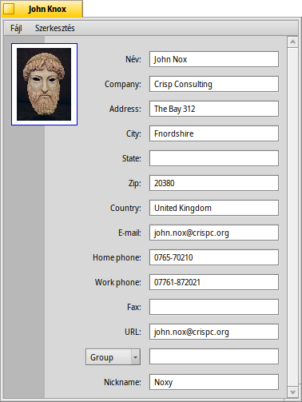
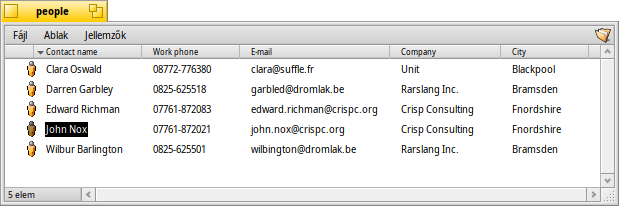

Magyar
Magyar Català
Català Deutsch
Deutsch English
English Español
Español Français
Français Italiano
Italiano Polski
Polski Português
Português Português (Brazil)
Português (Brazil) Română
Română Slovenčina
Slovenčina Suomi
Suomi Svenska
Svenska 中文 ［中文］
中文 ［中文］ Русский
Русский Українська
Українська 日本語
日本語 Névjegyek (People)
Névjegyek (People)
| Asztalsáv: | ||
| Útvonal: | /boot/system/apps/People | |
| Bellítások: | ~/config/settings/People_data |
A Névjegyek egy egyszerű névjegy-adatbázis, ami a Haiku jellemzőit használja, melyek a fájrendszeren kerülnek tárolásra. Minden névjegy külön fájlban van eltárolva, ahol az adatok jellemzőkként szerepelnek. Ennek köszönhetően az összes adat indexelve van, így lekérdezés is építhető rá, tehát bármely adatra rákereshetünk.
A Csoport-jellemző az ablak alján lehetőséget ad arra, hogy a névjegyeket csoportokba rendezzük. Ez hasznos lehet akkor, ha például több ember ugyan azon a feladaton dolgozik. Az előugró menüből már létező csoportot is kiválaszthatunk. Ha egy felhasználó több mint egy csoport tagja, akkor a csoportnevek vesszővel (",") elválasztva jelennek meg.
A névjegyek fájljai általában a /boot/home/people/ mappában találhatóak. Ha látni szeretnénk az összes névjegyet, akkor csak nyissuk meg a mappát, és válasszuk ki a szükséges jellemzőket. Ha csoportosítani szeretnénk a névjegyeket, akkor csak készítsünk egy lekérdezést, és egy ablakban látjuk majd az összeset, ami megfelel a feltételnek.
Ezek a fájlok épp úgy használhatóak, mint a többi fájl: jellemzők szerint rendezhetőek (a további rendezési szempontok ugye a SHIFT lenyomása melletti kattintással), és persze törölhetőek, megduplázhatóak vagy átnevezhetőek. A névjegy adatai közvetlenül is szerkeszthetőek: csak a jellemzőre kell kattitnani (vagy ALT E), épp mint mikor egy fájlt átnevezünk. Ha már a szerkesztő módban vagyunk, akkor a TAB és a SHIFT TAB lenyomásával lépegethetünk az oszlopok közt.